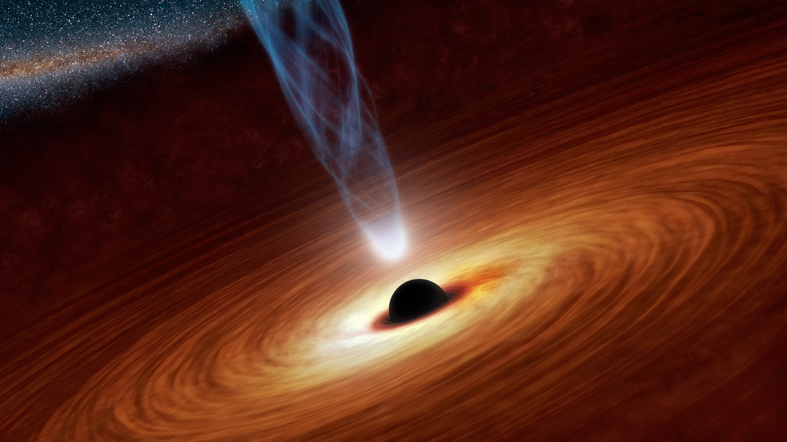

From Wikipedia, the free encyclopedia
This article is about the general framework of distance and direction. For the space beyond Earth's atmosphere, see Outer space. For the keyboard key, see Space bar. For other uses, see Space (disambiguation).
A right-handed three-dimensional Cartesian coordinate system used to indicate positions in space.
Space is the boundless three-dimensional extent in which objects and events have relative position and direction.[1] Physical space is often conceived in three linear dimensions, although modern physicists usually consider it, with time, to be part of a boundless four-dimensional continuum known as spacetime. The concept of space is considered to be of fundamental importance to an understanding of the physical universe. However, disagreement continues between philosophers over whether it is itself an entity, a relationship between entities, or part of a conceptual framework.
Debates concerning the nature, essence and the mode of existence of space date back to antiquity; namely, to treatises like the Timaeus of Plato, or Socrates in his reflections on what the Greeks called khôra (i.e. "space"), or in the Physics of Aristotle (Book IV, Delta) in the definition of topos (i.e. place), or in the later "geometrical conception of place" as "space qua extension" in the Discourse on Place (Qawl fi al-Makan) of the 11th-century Arab polymath Alhazen.[2] Many of these classical philosophical questions were discussed in the Renaissance and then reformulated in the 17th century, particularly during the early development of classical mechanics. In Isaac Newton's view, space was absolute—in the sense that it existed permanently and independently of whether there was any matter in the space.[3] Other natural philosophers, notably Gottfried Leibniz, thought instead that space was in fact a collection of relations between objects, given by their distance and direction from one another. In the 18th century, the philosopher and theologian George Berkeley attempted to refute the "visibility of spatial depth" in his Essay Towards a New Theory of Vision. Later, the metaphysician Immanuel Kant said that the concepts of space and time are not empirical ones derived from experiences of the outside world—they are elements of an already given systematic framework that humans possess and use to structure all experiences. Kant referred to the experience of "space" in his Critique of Pure Reason as being a subjective "pure a priori form of intuition".
In the 19th and 20th centuries mathematicians began to examine geometries that are non-Euclidean, in which space is conceived as curved, rather than flat. According to Albert Einstein's theory of general relativity, space around gravitational fields deviates from Euclidean space.[4] Experimental tests of general relativity have confirmed that non-Euclidean geometries provide a better model for the shape of space.
The Milky way's Galactic Center in the night sky above Paranal Observatory(the laser creates a guide-star for the telescope).

A black hole is a region of spacetime exhibiting such strong gravitational effects that nothing—not even particles and electromagnetic radiation such as light—can escape from inside it.